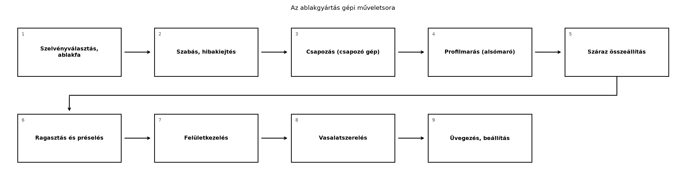
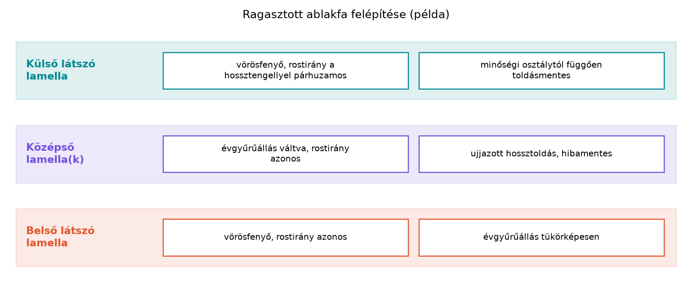

Egy megrendelő 1200 mm széles, 1500 mm magas, egyszárnyú faablakot kér, amely bukó-nyíló mozgású: a kilincs középső állásában a szárny a függőleges pántokon befelé nyílik, a kilincs felső állásában pedig a felső széle kibillen, az alsó él a toknál marad. Az ablakot hőszigetelő üvegezéssel, külső oldalon lazúrfelülettel kell gyártani. A műhelyben a tanuló azt figyeli, ahogy az asztalos a gépeken dolgozik, és meg kell értenie, miért a csapozó marógép és az alsómaró a gyártás két kulcsgépe, miért ragasztott ablakfát használnak, és milyen vasalat-állítási pontokon múlik, hogy az ablak húzásra könnyen jár, mégis tömítsen.
A kész ablakot képzeljük el elölről: a tok a falnyílásban ül, belső peremén a szárny kerete, amely egy hőszigetelő üveg táblát fogad magába. A szárny és a tok között a vasalat elemei látszanak: két sarokpánt alul és felül, a zárás oldalán zárópontok, és egy olló a bukó mozgáshoz. A kilincs a szárny belső oldalán van, a tok kerületén pedig a zárócsapok fogadó elemei sorakoznak.


Definíció. A ragasztott ablakfa olyan, 3 (vagy több) lamellából ragasztott profilanyag (ablakkantni), amelynek lamellái azonos, a hossztengellyel párhuzamos rostirányúak, de évgyűrűállásuk váltakozik (tükörképesen), így a lamellák vetemedése kiegyenlíti egymást; ezért a kész szelvény kevésbé vetemedik, mint a tömör fából egy darabból kimunkált profil. A lamellák ujjazott (fogazott) hossztoldással készülhetnek; a látszó külső lamella minőségi osztálytól függően toldásmentes is lehet (ellenőrizendő: gyártói adatlap). Az ablakgyártáshoz leggyakrabban vörösfenyőt, tölgyet vagy borovi fenyőt használnak, mert ezek jól tartják a csapozást, és a megfelelő felületkezeléssel időjárásállóak (ellenőrizendő: fafaj és tartóssági osztály a gyártói adatlap szerint).
Szabály. Az ablakfa nedvességtartalma feldolgozáskor jellemzően 12–15 % (a száraz tömegre vonatkoztatva). A túl nedves fa beépítés után zsugorodik, a túl száraz dagadhat, ezért a fűrészárut a gyártóüzemben szárítják, majd a műhelyben 1–2 napig azonos klímán pihentetik a szelvényválasztás előtt (ellenőrizendő: a pontos érték a gyártói előírás és a szabvány szerint).
A szelvény az ablakállványok keresztmetszete. A tok profilja a falnyílás felé néz, a szárny profilja az üveg felé, az üvegléc pedig az üveget rögzíti a szárnyhornyában. A szelvényeken falc, nút, csapváll és tömítőhorony található. A pontos méreteket az ablak teljesítmény-követelményei (hőszigetelés, légzárás) és a beépítési méret határozza meg. A mai gépgyártásban a szelvényeket szerszámkészlet segítségével marják, amelyben minden felületet külön marófej vagy váltólapkéses késfej munkál meg.
A függőleges metszet ugyanazt a profilt mutatja, mint a Ablakok: rendeltetés, csoportosítás, méretmegadás és szerkezetek (tok és szárny 78 × 80 mm, háromrétegű üveg 4–14–4–14–4 = 40 mm; tanulási méretek, ellenőrizendő: profilrendszer adatlapja). A tanulságos rész az alsó csomópont: a szárny alsó élén vízvető, a tokon alumínium vízvető sín, a külső és a középső tömítés közötti kamrából ferde vízelvezető és nyomáskiegyenlítő furat vezet ki, az üveg pedig támasztó ékre ül.
A keretszerkezet sarkait a Csapozó marógépek, láncmarógép és szerkezeti kötések gépen alfejezetben tanult gépekkel készítjük. Az ablakgyártásban a sarokkötés lehet:
A csapozó marógép a léc végén a csapot és a csapvállakat alakítja ki. Az ablakgyártásnál gyakran kétlépcsős gépsort használnak: először egy hosszmaró vagy szélesztő körfűrész a csap hosszát és a vállakat, majd a csapozó gép a csapvastagságot munkálja meg. A csap hossza a szelvény szélességétől függ, a fészek mélysége pedig a léc szélességének körülbelül kétharmada. A fészek a névleges méretre készül (a szelvény vastagságának harmada, pl. 27,0 mm), a csapot pedig oldalanként 0,1–0,2 mm-rel vastagabbra marják (préselési ráhagyás: a csap ennyivel nagyobb a fészeknél, így szorító illesztést ad) (tájékoztató, ellenőrizendő: ragasztógyártó/gépkönyv).
Gépbiztonság. A csapozó marógépen a szerszámsort védőburkolat fedi, a munkadarabot befogó rögzíti, az elszívást be kell kapcsolni. Az alsómarón a profilmaráshoz használjunk védőkeretet és tolófát, kesztyűt tilos viselni. A szerszámok megengedett fordulatszámát a gyártói adatból ellenőrizzük: a profilmarók jellemzően (ellenőrizendő), de kizárólag a szerszámra írt érték a mérvadó.
A profilmarás az alsómarón vagy speciális ablakprofil-maró gépen történik. A profilmaró szerszámkészlet egymás után szerelt marófejekből áll, amelyek a tok, a szárny és az üvegléc hornyait, falcait egy vagy több menetben alakítják ki. A munkadarabot ütközőhöz szorítva, ellenirányú marással toljuk, ahogy az Asztalos marógép (alsómaró): profilmarás, díszlécek, sablon szerinti marás alfejezetben tanultuk. A marás előtt a csapozott végekre próbadarabbal ellenőrizzük a szerszámbeállítást, mert a profil eltolódása esetén a tok és a szárny nem illeszkedik.
A tok- és szárnykeretek sarokkötéseit D4 osztályú, vízálló ragasztóval ragasztjuk (MSZ EN 204 szerint, ellenőrizendő). A ragasztót egyenletesen, vékony rétegben visszük fel a csap és a fészek felületére, majd a keretet keretprésben vagy sarokprésben rögzítjük. A préselési idő a gyártói adatlap szerint, például 10–30 perc, a présnyomás a ragasztott felületre vetítve tájékoztatóan puhafánál 0,1–0,5, keményfánál 0,5–1,0 N/mm²; ellenőrizendő: ragasztó műszaki adatlapja. Préselés után a csapolásnál kinyomódott ragasztót azonnal, még nedvesen le kell törölni, mert megszáradva elszínezi a felületet és gátolja a pácfelvételt.
A felületkezelés a A lakkok csoportosítása: NC, PE, PU, SK, diszperziós és UV-lakkok és a Felhordás gépei: szórópisztolyok és szórástechnológiák, mártás, hengerlés, öntés alfejezetekben leírt lépéseket követi. Az ablakokat gyakran bemártásos alapozóval védik először: a keretet néhány másodpercre vékony, biocideket tartalmazó alapozó oldatba mártják, majd csöpögtetik (ellenőrizendő: a termék biztonsági adatlapja, száradási idő). Ez a módszer a csapolási és nútfelületekbe is bejuttatja a védőszert. Az alapozó után közbenső csiszolás következik, majd lazúr vagy fedőfesték felhordása szórópisztollyal. Kültéri ablakra UV-álló, időjárásálló bevonatot választunk, a rétegek száma a gyártói rendszer szerint, például 1 alapozó + 2 fedőréteg.
Figyelem. A felületkezelő anyagok VOC-tartalma, a szóráskép és a száradási idő gyártónként eltér. A szórófülkében légzésvédő (FFP-osztály a biztonsági adatlap szerint) és elszívás szükséges; a ragasztó és a bevonat keverési arányát a gyártói adatlap adja meg (ellenőrizendő).
Definíció. A bukó-nyíló vasalat olyan szerelvényrendszer, amely a szárnyat a kilincs három állásában irányítja: zárt, nyíló (forgó) és bukó (kibillenő); egyes vasalatokhoz résszellőző (fokozatos bukó) állás is tartozik. A vasalat fő elemei: kilincs, sarokpánt, olló, zárócsapok és zárólemezek, részáró elemek és biztonsági zárócsap. A pántok a szárny súlyát hordják, a zárócsapok a tokra húzzák a szárnyat, így tömítést adnak.
Faablaknál a vasalat a szárny kerületi falcába, a profilrendszer szerinti falchézaggal és tengelytávval kerül (ellenőrizendő: vasalatgyártó faablak-katalógusa); a vasalat elemei csavarokkal és csúszóbetétekkel állíthatóan rögzíthetők. A zárópontok száma a szárny méretétől függ: az 1200×1500 mm-es szárnyra jellemzően 4–6 zárócsap kerül (tájékoztató, a vasalatgyártó előírása). A zárópontokat a sarkokban és a hosszú oldalak mentén egyenletesen kell elhelyezni, mert a tokra való nyomás így oszlik el.
A rajzon a kilincs alatti hajtómű (1) a falcban futó rudakon és a sarokátváltókon (2) át mozgatja a zárócsapokat (5), amelyek a tokon lévő zárólemezekbe (6) fognak; a szárny súlyát a sarokpánt és az ollócsapágy (4) hordja, bukó állásban az olló (3) tartja. Beállítani az alsó sarokpántnál magasságban és oldalirányban, az ollónál oldalirányban, a zárócsapok excenterén préselésre lehet. Az alapállások: zárt, nyíló, bukó; a résszellőző állás csak egyes vasalatok kiegészítő eleme (ellenőrizendő: vasalatgyártó katalógusa).
A vasalat beállítása akkor szükséges, ha a szárny szorul, nem zár a kerületén, leereszkedik a kilincs oldalán, vagy a bukó állásban kiakad. A beállítás előtt ellenőrizzük a tok derékszögét, a pánt csavarjainak meghúzását és a zárólemezek rögzítését.
Technológiai utasítás – bukó-nyíló vasalat beállítása
A hőszigetelő üvegezés két vagy több üvegtáblából áll, amelyek között távtartó és nedvességmegkötő van, a peremét pedig szilikon vagy poliszulfid tömítés zárja. A tábla felépítését az üvegszerkezet számsorával adják meg, például 4–16–4: két darab 4 mm-es float üveg, közöttük 16 mm-es légrés. Az üveg tömegét a felületből és a fajlagos tömegből számítjuk: , tehát egy -es, 4 mm vastag üvegtábla tömege .
Az üvegezés menete: a szárnyhornyot megtisztítjuk, támasztó ékeket helyezünk alulra, oldalt és felül távtartó ékeket, hogy az üveg ne feküdjön a fa hornyában. Az üvegtáblát óvatosan a horonyba helyezzük, majd tömítőprofilokat (gumi vagy műanyag) sajtolunk a hornyokba. Faablaknál rendszerint a belső oldalon üvegléc rögzíti az üvegtáblát csavarokkal vagy klipekkel. A léc csavarjait nem szabad túlhúzni, és a külső-belső hornyokat rugalmas, UV-álló tömítőanyaggal zárhatjuk le (ellenőrizendő: a gyártói utasítás szerint). Az üvegezés után a szárnyon vízelvezető furatok legyenek, hogy a csapadék a hornyokból kifolyjon (ellenőrizendő: az ablakrendszer előírása).
Minőségellenőrzés. Az ablakgyártásban a következő pontokat mérjük vagy szemrevételezzük:
Hiba: A szárny a kilincs oldalán alacsonyabban
lóg, záráskor a tok alsó éléhez dörzsöl.
Ok: Az alsó sarokcsapágy magasságállítása elállítódott,
vagy a csavarlyuk a faanyagban megkopott.
Helyes gyakorlat: A szárnyat az alsó sarokcsapágy
magasságállítójával visszaemeljük, a kilincsoldali felső sarkot a felső
ollócsapágy oldalirányú állításával húzzuk a pántoldal felé; ha a furat
tönkrement, a furatot fabetéttel vagy műgyantával erősítjük meg, és új
csavart használunk.
Hiba: Az ablak egyes zárópontokon szorul, máshol
rést hagy, a tömítés nem egyenletes.
Ok: A zárólemezeket rosszul állították, vagy a tok
kerete a beépítés után elmozdult (nem derékszögű).
Helyes gyakorlat: Először a tok derékszögét
ellenőrizzük és rögzítjük a beépítési ékekkel, majd a zárócsapokat
sorban a tokra igazítjuk.
Hiba: A bukó állásban az olló kiakad, vagy a
szárny nem hajtható be zárásig.
Ok: A bukóhatároló rosszul van beállítva, vagy a
kilincs működtető rudazata elhajlott.
Helyes gyakorlat: A kilincs rudazatát megfeszítjük, az
olló csúszkáját a gyártói méretre állítjuk, és a bukóállást többször
működtetve próbáljuk.
Hiba: Az üveg belső oldalán pára csapódik le
(nem a két üvegtábla között, hanem a felületen).
Ok: A helyiség páratartalma magas, és az ablak belső
felülete hideg; a tömítés nem rossz, de a hőszigetelő üveg hőátbocsátási
tényezője nem megfelelő.
Helyes gyakorlat: Először a szellőztetést és a belső
páratartalmat ellenőrizzük (40–60 % relatív páratartalom, tájékoztató),
a peremkondenzációnál melegperemes távtartót javaslunk; üvegcserét csak
akkor, ha az
a teljesítménynyilatkozat szerint sem felel meg
(ellenőrizendő).
Egy megrendelő reklamálja, hogy a frissen beépített, bukó-nyíló faablak nehezen zár, a kilincset meg kell emelni. A helyszíni vizsgálat azt mutatja: a tok jó, de a szárny a zár oldalán 3 mm-rel lejjebb süllyedt, ezért az alsó zárócsap a lemez szélét kapja. Az asztalos a beállítást a fenti beállítási utasítás szerint végzi: először a felső ollócsapágynál a szárny felső sarkát 1–2 mm-rel a pántoldal felé húzza (vízszintes állítás), majd az alsó sarokcsapágy magasságállítójával a szárnyat a kívánt magasságra emeli, amíg a szárny éle párhuzamos nem lesz a tokkal (ellenőrizendő: vasalatgyártó beállítási útmutatója). Ezután a zárócsapokat egyenként a toklemezekre állítja. A kilincs most már könnyen zár, a zárópontok enyhe nyomást adnak. A tanulság: a beépítés utáni első héten a fa alkatrészek még „dolgoznak”, ezért a pántok terhelése megváltozhat, és a próbazárás elengedhetetlen.
1. feladat (A)
Nevezz meg három lehetséges sarokkötést az ablakkeret sarkainak
kialakítására, és röviden jellemezd őket.
2. feladat (B)
Számítsd ki egy 4 mm vastag, 800 mm × 1000 mm-es üvegtábla tömegét, ha
az üveg sűrűsége
.
3. feladat (B)
Egy ablakcsapozó marógépen a csap vastagságát a szelvény vastagságának
harmadára választjuk. A szelvény vastagsága 80 mm. Mekkora a fészek
szélessége (névleges méret, egész mm-re kerekítve)? A csapot oldalanként
0,15 mm préselési ráhagyással vastagabbra marjuk a fészeknél: mekkora a
csapvastagság?
4. feladat (C)
A bukó-nyíló vasalat beállításakor azt tapasztalod, hogy a szárny felül
szorul, alul rés van. Melyik beállítást választod először, és miért?
Magyarázd el a lépéseidet.
5. feladat (C)
Tervezd meg egy egyszárnyú, bukó-nyíló ablak gyártásának rövid
művelettervét (legalább 8 lépés), feltüntetve az ellenőrzési
pontokat.
6. feladat (D)
Készítsd el a Technológiai lap mintáját egy 900 mm széles, 1100 mm
magas, vörösfenyő ablak keretének csapozására és profilmarására.
Önellenőrzés – válaszok
1. A ragasztott ablakfa több lamellából ragasztott, ujjazott
hossztoldással is készülhető profil; a lamellák rostiránya azonos,
évgyűrűállásuk váltakozik; így kevésbé vetemedik, és hosszú, egyenes
szelvényeket lehet belőle készíteni.
2. Kilincs, sarokpánt, olló, zárócsapok és zárólemezek,
részáró/biztonsági elemek.
3. D4 osztályú, vízálló ragasztót, mert az ablak kültéren vagy
nedvességnek kitett helyen működik.
4. A bemártásos alapozó a csapolási és nútfelületekbe is bejut, így az
egész keretet védi a gomba és rovarok ellen.
5. Tehermentesített, zárt állapotban papírcsíkkal húzunk végig a hornyok
mentén; a papír enyhe ellenállással húzható ki, ekkor a tömítés jó; ha
erő nélkül kicsúszik, ott rés van.
1. feladat (A)
Vésett csapozás: a szelvény végén kialakított csap és a másik darabban
mélyített fészek; kettős csap: ugyanez két keskeny csappal a széles
saroknál; szögcsap: sok apró, ék alakú csap, nagy ragasztófelület;
idegencsap: a vállak találkoznak, és külön betét (lamelló vagy
köldökcsap) adja a kötést.
2. feladat (B)
Adott:
;
;
.
Keresett:
.
Képlet:
.
Behelyettesítés:
.
Ellenőrzés: 0,8 m² 4 mm vastag üveg nagyjából 3,2 liter üveg, tömege 8
kg, reális. ∎
3. feladat (B)
Szelvényvastagság
.
Fészekszélesség
,
kerekítve 27,0 mm (tájékoztató). A préselési ráhagyás oldalanként 0,15
mm, tehát a csapvastagság
.
Ellenőrzés: a csap 0,3 mm-rel vastagabb a fészeknél, tehát enyhén
szorul, ez kell a ragasztáshoz. ∎
4. feladat (C)
A szárny felül szorul, alul rés van: a szárny túl magasan ül. Először az
alsó sarokcsapágy magasságállító csavarjával leengedjük a szárnyat. Ha
ezután csak a kilincsoldali felső sarok szorul, a felső ollócsapágynál
vízszintesen állítunk (a felső sarkot a pántoldal felé húzzuk). Végül a
zárócsapok excenterével a nyomást igazítjuk. A sorrend azért ez, mert a
magasság változtatása az oldalhelyzetet is módosítja (ellenőrizendő:
vasalatgyártó beállítási útmutatója).
5. feladat (C)
Műveletterv (rövid): 1) Szelvényválasztás, nedvesség ellenőrzés. 2)
Szabás hosszra, hibakiejtés. 3) Csapozás a csapozó gépen. 4) Fészekmarás
(ha vésett csap). 5) Profilmarás az alsómarón. 6) Száraz összeállítás,
derékszög ellenőrzés. 7) Ragasztás, préselés. 8) Méretre igazítás,
csiszolás. 9) Felületkezelés. 10) Vasalatszerelés. 11) Üvegezés. 12)
Végellenőrzés, beállítás.
6. feladat (D)
Minta a Technológiai lapra a keret csapozására és profilmarására:
Termék/alkatrész: Vörösfenyő ablakkeret 900×1100 mm,
tok- és szárnylécek.
Anyag: Ragasztott ablakfa, nedvesség 12–15%
(ellenőrizendő).
Gépek, szerszámok: Csapozó marógép, alsómaró profilmaró
szerszámkészlettel, derékszögelő, tolómérő, acél mérőszalag.
Beállítási adatok: fészekszélesség =
szelvényvastagság/3 = 27,0 mm; csapvastagság = 27,0 + 2×0,15 = 27,3 mm;
profilmaró fordulatszám a szerszámra jelzett
(tájékoztató, ellenőrizendő).
Léchosszak (900 × 1100 mm-es keret, 80 mm széles szelvény, 53 mm csaphossz): az álló lécek 1100 mm hosszúak; a vízszintes lécek hosszúak (a szabásnál +10 mm ráhagyás, ellenőrizendő).
Gépbiztonság. A művelet betanított, felügyelt tanulónak szól; védőberendezés nélkül, egyedül, fáradtan ne végezd. Csapozó gép: szerszámsor burkolat, befogó, elszívás. Alsómaró: védőkeret, tolófa, elszívás, tilos kesztyű. Védőszemüveget és fülvédőt viselj (ellenőrizendő: a zajszint függvényében).
Lépések:
1. Ellenőrizd a gépeket: szerszámrögzítés, védőburkolatok, elszívás,
üres járatás. – Ellenőrzés: nincs szokatlan rezgés, hang.
2. Fogd be a lécet a csapozó gép asztalára, a csapvállhoz képest a
megfelelő ütközővel. – Ellenőrzés: a léc szilárdan, elmozdulás nélkül
áll.
3. Marasd ki a csapot és a vállakat. – Ellenőrzés: csapvastagság
tolómérővel, a préselési ráhagyással.
4. Végezd el a fészekmarást (ha szükséges). – Ellenőrzés:
fészekszélesség, derékszög.
5. Állítsd be az alsómarót a profilmaráshoz, sablonon ellenőrizd a
profilt. – Ellenőrzés: próbadarab megfelel a rajznak.
6. Marasd a lécek profilját ellenirányú marással, tolófával. –
Ellenőrzés: a profil teljes hosszban azonos, nincs kiszakadás.
7. Tisztítsd meg a darabokat, és végezz száraz összeállítást. –
Ellenőrzés: derékszög, illeszkedés, csap vállak záródnak.
Dokumentálás: Munkanaplóban rögzítsd a szerszámok
,
,
adatait, a beállított csap- és fészekméreteket, és a mérési
eredményeket.
Az ablakgyártás gépekkel a ragasztott ablakfa kiválasztásával kezdődik, amelynek azonos rostirányú, de váltakozó évgyűrűállású lamellái csökkentik a vetemedést. A csapozó- és láncmarógéppel a keretek sarkain vésett csapozást, kettős csapot vagy idegencsapos kötést alakítanak ki; a csapvastagság a szelvényvastagság közel harmada. Az alsómarón profilmaró szerszámkészlettel a tok, a szárny és az üvegléc profiljait marják ellenirányú marással. A sarokkötéseket D4 osztályú, vízálló ragasztóval préselik, majd a felületkezelés bemártásos alapozással és szórt lazúrral vagy fedőfestékkel történik. A bukó-nyíló vasalat sarokpántokból, ollóból, zárócsapokból és lemezekből áll; a beállítás a pántok magasság-, oldal- és nyomásállító csavarjaival, valamint a zárópontok excentereivel végezhető. Az üvegezés hőszigetelő üvegtáblával, távtartókkal és tömítőprofilokkal történik. Minőségellenőrzés során a derékszöget, az átlókat, a felületet, a vasalat működését és az üvegezés tömítettségét vizsgáljuk. Továbbvitt eredmény. Ez az alfejezet megalapozza a Spaletta, zsalugáter és árnyékolástechnikai berendezések és a Épületasztalos-ipari és kültéri termékek helyszíni beépítése témákat, mert a gépi ablakgyártás és a vasalat beállítása azokban is előfeltétel.